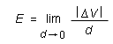
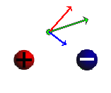
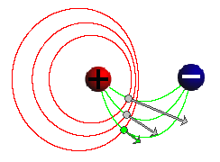
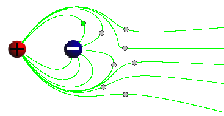
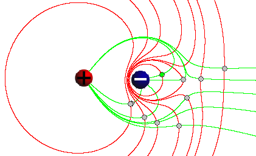

Prerequisites
Students should be familiar with the concept of charge and Coulomb's law of electrostatics and the electric field due to a point charge.
Learning Outcomes
Students will have an opportunity to review the definition of the electric field and the characteristics of the electric field due to a point charge. They will learn to construct the electric field due to two point charge sources as a superposition of the fields due to the individual point charge sources. They will have an opportunity to review the concept of electric potential, its relation to the electric field, and lines of equal electric potential and will learn about the patterns of such lines due to two point charge sources.
Instructions
Students should know how the applet functions, as described in Help and ShowMe.
The applet should be open. The step-by-step instructions in the following text are to be done in the applet. You may need to toggle back and forth between instructions and applet if your screen space is limited.
 Laws, Theorems, Definitions
Laws, Theorems, Definitions
 Coulomb's Law of
Electrostatics
Coulomb's Law of
Electrostatics
 Theorem on Electric Forces Exerted
by Charged Spheres
Theorem on Electric Forces Exerted
by Charged Spheres
 Definition of Electric Field and
Electric Field Lines
Definition of Electric Field and
Electric Field Lines
 Electric Potential and
Equipotential Lines
Electric Potential and
Equipotential Lines
 Superposition of Forces and
Fields
Superposition of Forces and
Fields
 The Electric Field Due
to a Point Charge
The Electric Field Due
to a Point Charge
 Superposition of Two Source
Fields
Superposition of Two Source
Fields

Any two particles carrying electric charges q1 and q2 exert electrostatic forces on each other. If the two charges have the same sign, the particles exert repulsive forces on each other. If they have opposite sign, the forces are attractive. The force exerted on Particle 1 has the same magnitude F as the force exerted on Particle 2, equal toF = k|q1||q2| / d2
(1)
where d is the separation between the two particles and k is a universal constant whose value is
k = 8.988×109 N m2 C-2.

Coulomb's law of electrostatics describes forces that two point particles exert on each other. A spherical object, like the source object in the present applet, is not a point particle, and Coulomb's law does not directly give the force exerted by a spherical object on a (point) particle. However, one can prove the following theorem which states that a charged sphere behaves like a point particle under certain conditions.
Letdenote the electrostatic force exerted by a charged sphere of radius R on a particle at a distance d from the center of the sphere. If the total charge Q residing on the sphere is uniformly distributed throughout the sphere and if d is equal to or greater than R, i.e., if the particle is outside the sphere, then
If
=
is called the electric field at the given point.
Comment 1. Since the force is proportional to the
charge q, the electric field is independent of q
and characterizes an "electric intensity" at the given
point in space that is present without the test particle
and does not depend on any properties of the test
particle.
Comment 2. The SI-unit of the electric field is N/C.
Comment 3. The electric field is defined at all
points in space. It is therefore not a single vector, but
a "vector-valued function defined on space". This simply
means that to describe the electric field one must
specify the vectors at all points in space.
Comment 4. An electric field line is a line (not a straight line in general) that indicates the direction of the electric field vectors at points along the line.
The electric field vector at a given point along an electric field line is tangential to the line at that point.
A static electric field, i.e., a field accompanying one or more source charges at rest, has the property that it can be derived from a simpler field called the electric potential. The electric potential field is simpler because it is a scalar field, not a vector field like the electric field. The electric potential field assigns a scalar quantity to any given point in space called the electric potential at that point. The SI-unit of the electric potential is the volt (V).
How can a scalar field give rise to a vector field? A static electric field is constructed from its electric potential field as follows.
Suppose you know the electric potential field and want to know the electric field vector at a given point P. Look at the electric potential in the neighborhood of P. Find the direction leading away from P in which the electric potential decreases more rapidly than in any other direction. This is the direction in which the electric vector at P points.The magnitude E of the electric vector at P is equal to the magnitude of the distance-rate-of-change of the electric potential,


where |ΔV| / d is calculated in the direction of the electric field vector at P. Here |ΔV| equals |V(P') - V(P)| where P' is a point near P that lies in the direction of most rapid change of V away from P and d is the distance between P and P'.
If the electric potential is constant throughout a small neighborhood of P or if the electric potential has a maximum or minimum at P, the electric field at P is zero.
Comment 1. Equation (5) implies the SI-unit V/m for the electric field. Another SI-unit for the electric field is N/C, as mentioned in Comment 2 under "Definition of Electric Field and Electric Field Lines" above.
Comment 2. In general, the potential in the vicinity of a given point P will be decreasing in some directions, increasing in others, and remain constant along a line through P dividing the directions of decreasing and increasing potential. This dividing line is the "equipotential line" through P.
An equipotential line is a line along which the electric potential is constant.
Such lines are not straight in general. In the present case of a point charge field, the equipotential lines are circles that have the point charge at their center.
Note that one is dealing with equipotential lines when considering only two dimensions. In three dimensions, one has equipotential surfaces. In the present case of a point charge field, the equipotential surfaces are spheres that have the point charge at their center.
Comment 3. The electric field vector at a given point is always perpendicular to the equipotential line through that point. As a consequence, electric field lines and equipotential lines cross at right angles at any given point.
Comment 4. Electric equipotential lines are analogous to lines of equal altitude on a topographic map. The steepest downhill direction is the direction in which these lines are closest together, i.e., the direction in which the altitude decreases most rapidly. This is the direction of the field vector.
If several forces are acting on a particle, the force vectors must be added to give the total force acting on the particle. This is called superposition of forces.
In Definition (4) of the electric field , the force
acting on a test particle at a given point is the total
electric force acting on the test particle. This total force
is the sum of the forces due to all source charges creating
the field. Therefore, the electric field vector at a given
point is equal to the sum of the electric field vectors due
to the individual source charges. This is called the
superposition of electric field vectors.
The entire electric field (set of field vectors at all points in space) is the superposition of the electric fields due to the individual source charges creating the field.
Task 1. Under "Laws, Theorems, Definitions" above, read the sections on
Question 1. What is the expression for the magnitude E of the electric field due to a sphere of uniform charge density and total charge Q that gives E at a distance d from the center of the sphere for a field point outside the sphere?
What is the direction of the field vector at this point for different signs of the source charge?
Answer. Taking magnitudes on both sides of Definition (4) and substituting Expression (3) for F gives the following expression for E:
 E
= k|Q| / d2,
E
= k|Q| / d2,  d >
R.
d >
R. (6)
(6)
The direction of the field vector is towards the center of the
sphere if Q is negative and away from the center of the
sphere if Q is positive. Why? Base your answer on the
definition of the electric field and the direction of the force
exerted by the source on a positive test charge.
Exercise 1. RESET  the applet.
the applet.
Set one of the source charges equal to zero. That way, you will be looking at the electric field due to a single point charge source.
Click on a point in the applet window to create a field point with electric field vector at that point. Drag the point and observe how the vector changes. Make sketches of what you observe, paying attention to both the magnitude and the direction of the electric field vector and the locations of the source and the field point. Are your observations about magnitude and direction of the field vector consistent with the answer to Exercise 1?
You may want to adjust the setting of the Vector Length Multiplier slider to have the field vectors represented by longer arrows.
Task 1. Under "Laws, Theorems, Definitions" above, read the section on "Superposition of Forces and Fields".
Exercise 1. RESET the applet.
Click on a point in the applet window to create a field point
with electric field vector at that point, and select the
Components button  to display the electric field vectors due to
the two source objects. See Figure 1 below for an
illustration.
to display the electric field vectors due to
the two source objects. See Figure 1 below for an
illustration.

Figure 1
Based on the Answer to Question 1 of the preceding section on "The Electric Field Due To A Point Charge", explain why the individual field vectors in Figure 1 due to the two source objects have the magnitudes and directions shown. No calculations are required, but you should explain why the red arrow is roughly twice as long as the blue arrow.
Given the two individual field vectors, explain how one can obtain the total field vector.
Exercise 2. Drag the field point, and observe how the total vector and the two individual vectors change. For two more positions of the field point, sketch your observations of the three vectors in your Notebook. Again, provide the same kinds of explanation as in Exercise 2.
You may want to adjust the setting of the Vector Length Multiplier slider to have the field vectors represented by longer arrows.
Exercise 3. Move the field point back to a position close to that shown in Figure 1 above. Independently vary the two source charges Q1 and Q2 while keeping the field point and the source objects fixed. For each of the following three cases, sketch the configurations of the field point with its three field vectors and the source objects. Indicate the values of the source charges.
In each case, explain your observations for all three vectors. Although exact measurements of the distances of the field point from the source objects and of lengths of vector arrows are not required, judge these quantities by eye and explain your observations as quantitatively as possible.
Exercise 1. RESET the applet.
Move the source objects reasonably close together, as in
Figure 2 below, and click in the applet window somewhere
between the two source objects to set a field point there.
Click the Field-Line button  to draw a green field
line through the field point. (In Figure 2, three such field
lines are shown, along with three equipotential lines. Ignore
the latter for the time being.)
to draw a green field
line through the field point. (In Figure 2, three such field
lines are shown, along with three equipotential lines. Ignore
the latter for the time being.)

Figure 2
In your Notebook, sketch the field line connecting the source
objects, and explain the shape of the line. Why is the field
line not straight as in the case of a single point charge?
For help in re-constructing the field line, display the field
vectors due to the individual sources by clicking the
Components button and move the field point along the field
line.
You may need to increase the setting of the Vector Length Multiplier slider to get arrows of a good size.
Exercise 2. RESET the applet.
Set the two source charges to
Set several field points as in Figure 3 below, and display the field lines through these points.

Figure 3
Sketch and explain the pattern of field lines. In particular, try to explain why some field lines don't return to one of the source charges.
Question 1. What would you expect the electric field to look like at large distances from the source charges, in all directions, if the source charges are unequal as in Exercise 2?
Try to simulate this with the applet by moving the source charges as close together as possible, selecting field points that are far from the source charges, and displaying field lines through these field points.
Sketch the field pattern you observe. Compare it to the field pattern for a single point charge source. What would you expect the magnitude E of the electric field to be equal to at a large distance d from both source charges?
Task 1. Under "Laws, Theorems, Definitions" above, read the section on "Electric Potential and Equipotential Lines".
Exercise 1. RESET the applet.
Move the source charges closer together, as in Figure 4
below, and display three field lines (green curves) and
equipotential lines (red loops) as in Figure 4 by setting
three field points as shown and clicking the Field-Line
and
Equipotential-Line  buttons each time.
buttons each time.
Figure 4
Sketch the pattern of field lines equipotential lines in your Notebook, and explain why the equipotential lines are the way they are.
For help with the explanation, move a field point along one of the equipotential lines and observe the direction of the field vector at that point and the direction of the equipotential line at that point.
Question 1. Which one of the three equipotential loops in Figure 4 has the largest electric potential, the innermost one or the outermost one?
Answer. The innermost loop has the largest potential because the electric field points from high to low potential. Note the direction of the field vector arrows in Figure 4.
Question 2. Based on the pattern of the three loops of constant electric potential, where along these loops is the magnitude E of the electric field the greatest?
Answer. E is greatest where the lines of electric potential are closest together, i.e., where an imaginary line connecting the two source objects intersects the equipotential lines.
This is so because of Equ.(5),
If one calculates E at a field point using the values of the electric potential on two equipotential lines close to that field point, then the ratio ΔV / d will be largest at a point where the distance d between the equipotential lines has the smallest value.
Exercise 2. RESET the applet.
Move the two source charges closer to each other and set their values to the unequal values used in Exercise 2 of the preceding section "Electric Field Lines",
Set some field points and display the electric field lines and equipotential lines through these points similar to what is shown in Figure 5 below.

Figure 5
Sketch the pattern of field lines and equipotential lines, and explain the pattern of equipotential lines in terms of the pattern of electric field lines.
In particular, explain why the "far out" equipotential lines seem to be looping around both source objects. Refer to your answers in Exercise 2 and Question 1 of the preceding section "Electric Field Lines".
Comment. The electric potential field due to two (or several) source charges is the superposition (sum) of the electric potential fields due to the individual source charges, as is true for the electric field. However, this superposition cannot be represented easily in graphical form because the electric potential is a scalar, not a vector like the electric field. It is, however, very useful in calculations. Adding scalars is easier than adding vectors.